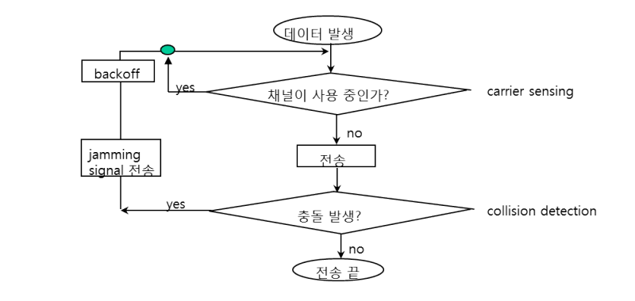

OSI 7계층

- OSI 7 Layer
- 네트워크 구성요소를 7개의 계층으로 역할을 나눈 표준 모델.
- TCP/IP(Transmission Control Protocol/Internet Protocol)
- 리눅스/유닉스 초기 운영체제에서 서로 연결을 위한 소프트웨어 집합을 만들었는데 그것이 TCP/IP
- OSI 7계층이 나오기 전 널리 사용되며 사실상 표준 역할을 하였음.
- OSI 7 Layer이 장비 및 통신의 표준으로서 사용되기는 하나 실질적인 통신은 TCP/IP의 프로토콜을 사용하여 이루어진다.
- OSI 계층이 양단의 단말기에서 어떤 방식으로 사용되는지 보여주는 예.
- 데이터를 장치 A에서 장치 B로 보내기 위해선 계층을 거치며 data가 패키징, 언패키징됨.
계층별 역할
1. 물리 계층(Physical Layer)
- 물리적인 매체를 통해 데이터가 변환된 전기적 신호를 보내고 받는 계층. 다음과 같은 역할을 한다.
- (1) 데이터의 송신과 수신의 속도가 같도록 일정 클록으로 비트를 동기화한다.
- (2) 전기적 신호를 데이터로, 데이터를 전기적 신호로 변환한다.
- NIC(Network Interface Card)
- 흔히 랜카드라고도 하며 다음의 기능을 한다.
- (1) 장비와 LAN 사이의 통신 준비. (+비트 송수신 속도 불일치 조정)
- (2) 전송될 데이터의 직렬화
- (3) 좀 더 빠른 전송 속도를 위한 인코딩
- (4) 데이터 수신 및 데이터를 CPU로 전달
- (5) 매체 접근 제어(Media Access Control)기능이 구현된 하드웨어와 펌웨어 지님.
- MAC는 하나의 통신 회선을 여러 단말장치들이 원활하게 공유할 수 있도록 해주는 통신 회선에 대한 접근 방식.
- cf) MAC 주소는 네트워크 인터페이스에 할당되는 고유 식별자.
- CSMA 방식, CSMA/CD 방식, 토큰 버스 방식, 토큰 링 방식 등이 있음.
- CSMA/CD(Carrier Sense Multiple Access/Collision Detection)
- Carrier Sense : 통신 회선이 사용중인지 점검
- Multiple Access : 통신 회선이 비어있으면 누구든지 사용 가능
- Collision Detection : 데이터 프레임을 전송하면서 충돌 여부 조사
- 이더넷 환경에서 적용되고 있는 프로토콜.
- CSMA/CD(Carrier Sense Multiple Access/Collision Detection)
- MAC는 하나의 통신 회선을 여러 단말장치들이 원활하게 공유할 수 있도록 해주는 통신 회선에 대한 접근 방식.

2. 데이터 링크 계층(Data Link Layer)
- 노드대 노드 전달의 책임을 지며 다음의 역할을 한다.
- (1) 프레임 구성 : 네트워크 계층으로부터 받은 데이터를 프레임 단위로 나눈다.
- 네트워크 계층으로부터 받은 데이터에 트레일러와 헤더를 덧붙인다.
- 트레일러에는 흐름, 오류, 접근제어를 위한 정보가, 헤더에는 물리주소(MAC) 등이 담김.
- 송신측과 반대로 수신측에서는 물리 계층에서 올라온 프레임의 header를 벗겨 어디로 보낼지 파악.
- (2)
물리주소(MAC address)할당 : 송신자/수신자의 물리 주소를 헤더에 추가한다. - (3) 흐름제어 : 송신측과 수신측간 데이터를 주고받을때, 성능 및 네트워크 환경으로 인해 데이터를 너무 적게 혹은 너무 많게 주고 받지 않도록 데이터 흐름을 적절히 제어.
- (4) 오류제어 : 손상 또는 손실된 프레임을 발견하고 재전송
- (5) 접근제어 : 매체상에 통신 주체가 여럿 존재할때 주어진 어느 한 순간에는 하나의 장치만 동작하도록 제어.
- (1) 프레임 구성 : 네트워크 계층으로부터 받은 데이터를 프레임 단위로 나눈다.
- 노드대 노드 전달의 책임
- 이더넷 프레임
- Preamble : 송신자와 수신자의 동기화를 위해 사용됨.(7byte)
- SFD(Start of Frame Delimeter) : 자신의 뒤로 오는 프레임의 내용이 곧 시작된다는 것을 알려줌.
- DA, SA : 출발지와 목적지의 MAC주소를 담고 있다.(각 6byte -> 앞의 24비트는 제조사 번호, 뒤의 24비트는 랜 카드 일련번호 의미)
- EtherType/Length : 데이터에 내재된 네트워크 프로토콜 타입 식별 역할.(2byte) Length는 수납되는 LLC 프레임의 길이를 나타냄.
- Data : 46 ~ 1500 bytes
- FCS(Frame Check Sequence) : 수신된 전체 프레임에서 손상된 데이터 탐지. 에러 검출.
3. 네트워크 계층(Network Layer)
- 패킷을 발신지-대-목적지전달하는 책임을 가지며 다음의 역할을 한다.
- 패킷이 데이터링크 계층으로 내려가 패키징되면 프레임으로 지칭한다.
- (1)
논리주소(IP)지정 : 상위 계층에서 받은 패킷에 발신지와 목적지의 논리주소를 헤더에 추가. (2) 라우팅 : 패킷이 목적지에 도착할 수 있도록 경로를 지정.
- 발신지 대 목적지 전달
목적지까지 과정에서의 각 노드에서도 네트워크 계층까지는 거친다. 방식에 따라 차이는 있지만 다음 노드의 MAC 주소를 갱신하는 등 해당 노드가 목적지인지 판별하고 다음 경로를 찾기 위함.
- 네트워크 계층의 주요 프로토콜
- ICMP(Internet Control Message Protocol) : 에러 발생시 발생 원인을 알려주거나 네트워크 상태 진단
- IGMP(Internet Group Management Protocol) : 멀티캐스팅 멤버십 제어를 위한 그룹 관리용 프로토콜
- ARP(Address Resolution Protocol) : 논리적인 IP주소를 이용해 물리적인 MAC 주소를 알아내는 방법. 캐시에 저장.
- RARP(Reverse Address Resolution Protocol) : ARP 반대로서 MAC주소를 이용해 IP주소 알아내는 방법. 저장 장치가 없는 네트워크 단말기 등의 IP 주소를 얻기 위해 사용한다.
- IP(Internet Protocol) : 네트워크 기기에서 논리적 식별을 위한 주소.
- IPv4와 IPv6 각각 40억개, 2의 128제곱의 개수를 가짐.
- 네트워크 계층의 전달 흐름
4. 전송 계층(Transport Layer)
- 전체 메시지의 프로세스 대 프로세스 전달에 대한 책임을 가진다.
- 프로세스대 프로세스이기 때문에 포트번호가 필요하다.
네트워크 계층은 개별적인 패킷의 종단간 전송을 담당한 반면, 전송 계층은 전체 메시지가 완전하게 도착하는 것을 보장한다.
- 기능
- (1) 포트 주소 지정 : 네트워크 계층은 개별 패킷을 정확한 컴퓨터에, 전송 계층은 해당 컴퓨터의 정확한 프로세스에 전달하는 역할을 한다.
- (2) 분할과 재조립 : 네트워크별 최대 전송 단위(MTU; Maximum Transfer Unit)에 따라 패킷을 세그먼트 단위로 나눈다. 각 세그먼트는 순서번호(offset)을 가지며 이를 이용하여 재조립하거나 패킷의 손실여부를 판단한다.
- (3) 연결제어
- (4) 흐름제어
- (5) 오류제어
- 전송 계층의 주요 프로토콜
- TCP(Transmission Control Protocol)
- 연결형 서비스. 가상 회선 방식 사용.
- 데이터의 신뢰성을 보장하며 3-way handshaking 과정을 통해 연결. 때문에 속도가 느릴 수 있다.
- 3way handshaking : TCP/IP 프로토콜을 이용한 통신에서 데이터 전송 전에 정확한 전송을 보장하기 위해 상대방 컴퓨터와 사전에 세션을 수립하는 과정을 의미한다.
- UDP(User Datagram Protocol)
- 비연결형 서비스. 데이턱그램 방식 제공
- 영상 스트리밍등 일부 데이터가 도착하지 않는다고 해서 컨텐츠 소비에 큰 지장이 없을 경우에 적합하다.
- 신뢰성이 낮은 대신 TCP보다 속도가 빠름.
- 비연결형 서비스. 데이턱그램 방식 제공
- SCTP(Stream Control Transmission Protocol)
- UDP + TCP
- 다중 연결 지원
- TCP(Transmission Control Protocol)
메시지의 프로세스대 프로세스 전달

- 전송계층 ~ 데이터링크 계층 데이터 패키징

5. 응용 계층(Application Layer)
- 프로그래머의 영역
- 사용자가 네트워크에 접근할 수 있도록 사용자 인터페이스 제공.
- FTP, Telnet, SMPT, DNS, DHCP, Ping, Tcpdump, Tracerouter 등 다양한 프로토콜이 존재하며 이러한 상위 프로토콜에 대한 정보가 헤더에 담겨(Message) 전송 계층으로 내려간다.